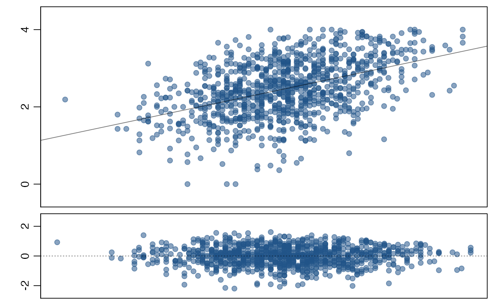
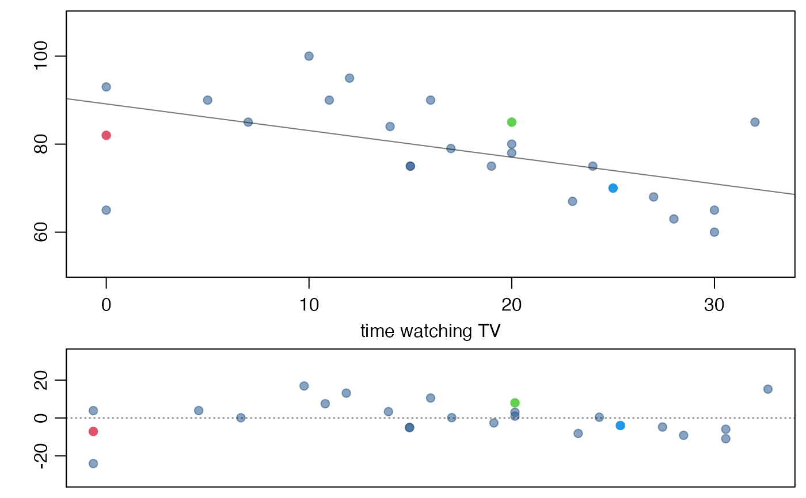

Plot data, the linear model, and a residual plot simultaneously.
lmPlot( x, y, xAxis = 0, yAxis = 4, resAxis = 3, resSymm = TRUE, wBox = TRUE, wLine = TRUE, lCol = "#00000088", lty = 1, lwd = 1, xlab = "", ylab = "", marRes = NULL, col = "#22558888", pch = 20, cex = 1.5, xR = 0.02, yR = 0.1, xlim = NULL, ylim = NULL, subset = NULL, parCustom = FALSE, myHeight = c(1, 0.45), plots = c("both", "mainOnly", "resOnly"), highlight = NULL, hlCol = NULL, hlCex = 1.5, hlPch = 20, na.rm = TRUE, ... )
| x | The x coordinates of points in the plot. |
|---|---|
| y | The y coordinates of points in the plot. |
| xAxis | The maximum number of x axis labels. |
| yAxis | The maximum number of y axis labels. |
| resAxis | The maximum number of y axis labels in the residual plot. |
| resSymm | Boolean determining whether the range of the residual plot should be symmetric about zero. |
| wBox | Boolean determining whether a box should be added around each plot. |
| wLine | Boolean determining whether to add a regression line to the plot. |
| lCol | The color of the regression line to be added. |
| lty | The line type of the regression line to be added. |
| lwd | The line width of the regression line to be added. |
| xlab | A label for the x axis. |
| ylab | A label for the y axis |
| marRes | Margin specified for the residuals. |
| col | Color of points. |
| pch | Plotting character. |
| cex | Plotting character size. |
| xR | Scaling the limits of the x axis. Ignored if |
| yR | Scaling the limits of the y axis. Ignored if |
| xlim | Limits for the x axis. |
| ylim | Limits for the y axis. |
| subset | A subset of the data to be used for the linear model. |
| parCustom | If |
| myHeight | A numerical vector of length 2 representing the ratio of the primary plot to the residual plot, in height. |
| plots | Not currently utilized. |
| highlight | Numerical vector specifying particular points to highlight. |
| hlCol | Color of highlighted points. |
| hlCex | Size of highlighted points. |
| hlPch | Plotting characters of highlighted points. |
| na.rm | Remove cases with |
| ... | Additional arguments to |
David Diez
lmPlot(satgpa$sat_sum, satgpa$fy_gpa)lmPlot(gradestv$tv, gradestv$grades, xAxis=4, xlab='time watching TV', yR=0.2, highlight=c(1,15,20))